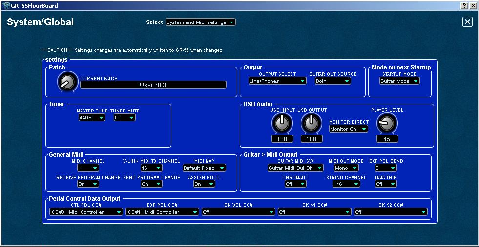
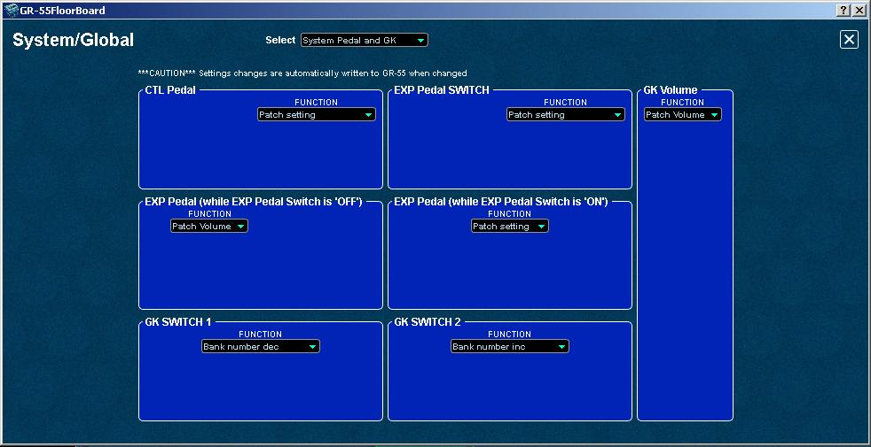
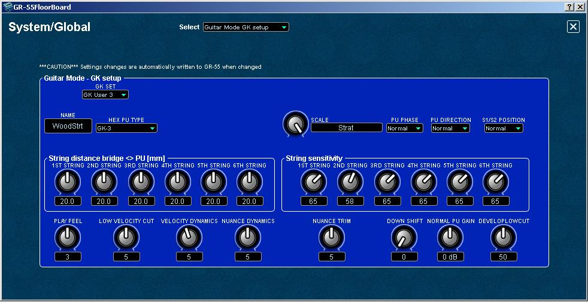
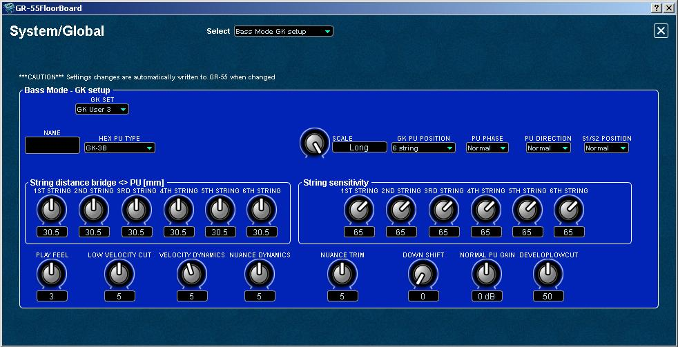

GR-55
FloorBoard Editor
Help
Index
Editing
SYSTEM Settings
NOTE:
The following sections describe "global" parameters affecting all GR-55
patches. Also very
important to know is that
any settings made in the SYSTEM
configuration
will take precedence over conflicting patch level MASTER, PDL/GK, or Assigns settings.
CAUTION: When you make a change to SYSTEM parameters in the editor or
in the GR-55, it is automatically written to the GR-55.
There
are four sub modules within the main SYSTEM editor panel, each has its
own editor panel and unique functionality, as follows :
- System
and MIDI Settings
- System
Pedal and GK Settings
- Guitar
Mode GK Setup
- Bass
Mode GK Setup
You
can access the above SYSTEM Settings by clicking the SYSTEM button at
the top of the editor's main panel:

Once
the System/Global
panel opens, simply click on the Select field to
open the settings sub-panel that you need.
System
and MIDI Settings

CAUTION: When
you make a change to SYSTEM parameters in the editor or in the GR-55,
it is automatically written to the GR-55.
The
System/Global System and
MIDI Settings panel allows you to configure the following
parameters:
- Patch knob is just another way that you can select the current
patch in the GR-55. You can dial through all USER, LEAD, RHYTHM,
and OTHER patches.
- Output
modes, where you can select main output mode (amplifier type) and the
guitar output mode. Each has multiple options.
- MODE on
the next startup, where you can select either guitar or bass mode,
which takes effect on the next startup - requires a power
cycle on the GR-55.
- Tuner section lets you set the tuner's reference frequency
and the tuner mute to ON or OFF.
- General
MIDI is where you configure the GR-55 to control or be controlled by
external MIDI equipment, soft synths, etc, using the
following parameters:
- MIDI channels used by the GR-55 to connect to
other MIDI devices.
- MIDI
MAP: This is used to make the GR-55 go to a selected patch when it
receives a MIDI PC message from other MIDI controllers or software:
- To use the MIDI MAP, specify the GR-55's internal MIDI MAP as either: - Default Fixed - one-to-one mapping (this is the default setting) or
- Programmable - specify which patch in the GR-55 is activated for a given PC it receives (blank by default, not same as fixed)
- Receive/Send MIDI Program Change (PC data): independent ON/OFF selection for send and recieve funtions .
- ASSIGN HOLD: Set ON
or OFF to retain the ASSIGN parameters when changing patches, e.g. Patch Volume if so configured.
- Guitar > MIDI Output is where can switch
the MIDI
output from the GR-55 ON/OFF, set its MIDI output mode, set the
expression pedal bend range, set the chromatic tracking ON/OFF, set the
string channels (which guitar string to which MIDI channel), and set
MIDI data thin ON/OFF to send pitch bend and other non-note MIDI data,
or not.
NOTE: Using
other MIDI devices connected or merged with system exclusive data transfered
to the GR-55 will cause the data to be corrupted. Only use the GR-55 on its own with a MIDI device for editing or patch data
backups.
To select which MIDI interface is used by the GR-55 FloorBoard Editor to connect to the GR-55, open the Settings > Preferences from the main menu and select the MIDI button. The panel displays the MIDI settings and you can select the MIDI input and MIDI output. See the Getting Started page for details.
To configure the GR-55 to receive MIDI control parameters, see Editing Controller Assignments.
System
Pedal and GK Settings

CAUTION: When
you make a change to SYSTEM parameters in the editor or in the GR-55,
it is automatically written to the GR-55.
The
System Pedal and GK Settings panel is where you configure the global
functions of the GR-55's CTL (control) and EXP
(expression) pedals, and the GK knob and switches. Any settings in this
panel will override the assigns to the same pedals, knobs and switches
made in individual patches. To use the GK knob for volume on all of
your patches, enable it here by setting it to "Patch Volume" as shown
in the image above. However, if you want to use the same knob instead
to control different parameters on each patch, say delay time on one
patch, cutoff frequency on a synth for another patch, then set the GK
Volume Function to "Patch Setting" here then and set up an Assign
instead, as you want it for each patch. "Patch Setting" here means that
you will specify the function for that control in the individual
patches. Anything else means that the controls operate globally, on ALL
patches. "Tone Volume" means the volume of the PCM Synths tones whereas
"Patch Volume" includes the volume of the COSM guitar or
bass.
Guitar
Mode GK Setup

CAUTION: When you make a change to SYSTEM parameters in the editor or
in the GR-55, it is automatically written to the GR-55.
The
Guitar Mode GK Setup panel is where you can configure up to ten (10)
unique GK settings for up to ten different guitar and/or bass
controllers, each with a unique name and parameters. Each GK SET can
specify the HEX PU (pickup) TYPE, the guitar's scale length, pickup
phase, pickup direction, and the GK's S1/S2 Switch position. You can
also set the distance from the bridge to the GK pickup, and the string
sensitivity, which is important to adjust to your individual playing
style. If you play hard, you may want to back these knobs off. If you
play gently, you might want them turned up a bit. You will also use
these to balance the levels of each string to one another. The Play
Feel, Velocity, and Nuance controls offer additional controls to
optimize your controller's performance with the GR-55 with
consideration for your style of play and your guitar or
bass controllers. If you switch controllers, you can go to
this
panel to select the settings for that controller.
Bass
Mode GK Setup

The
Bass Mode GK Setup panel is where you can configure up to ten (10)
unique GK settings for up to ten different guitar and/or bass
controllers, each
with a unique name and parameters. Each GK SET can specify the HEX PU
(pickup) TYPE, the guitar's scale length, pickup position for bass (4,
5, or 6 strings, etc), pickup phase, pickup
direction, and the GK's S1/S2 Switch position. You can also set the
distance from the bridge to the GK pickup, and the string sensitivity,
which is important to adjust to your individual playing style. If you
play hard, you may want to back these knobs off. If you play gently,
you might want them turned up a bit. You will also use these to balance
the levels of each string to one another. The Play Feel, Velocity, and
Nuance controls offer additional controls to optimize your controller's
performance with the GR-55 with consideration for your style of play
and your guitar or
bass controllers. If you switch controllers, you can go to
this panel to select the settings for that controller.